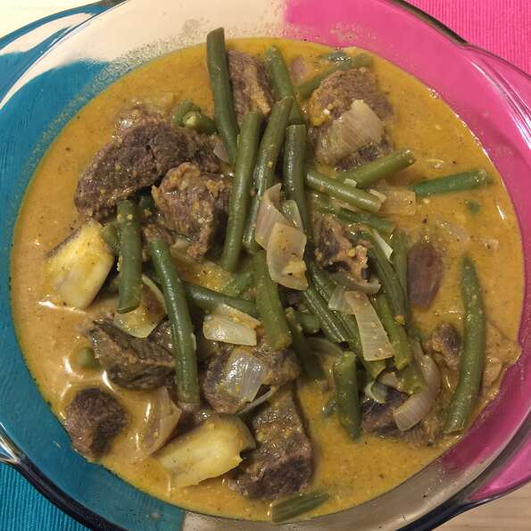

Yummy Yummy Kare Kare!

This dish is rich in flavor due to the slow cooking of the oxtail. Oxtail can be cooked to tenderness a day before so you can
skim off the fat making the dish more heart healthy. Using a pressure cooker will speed up cooking time, but will lose much
of the
flavor. Serve with rice and shrimp paste
Ingredients
- 4 ½ pounds beef oxtails
- 3 cups water
- 2 beef bouillon cubes
- ½ pound bok choy, chopped
- ½ pound long beans, cut into bite-sized pieces
- ½ pound eggplant, cubed
- 2 tablespoons olive oil
- 1 onion, chopped
- 2 cloves garlic, minced
- 1 teaspoon achiote powder
- 3 tablespoons smooth peanut butter
Directions
- Combine the oxtails and water in a large pot; bring to a boil, reduce heat to medium-low, and simmer at least 2 hours.
- Skim as much fat from the top of the liquid as possible. Crumble the beef bouillon cubes into the liquid and allow to dissolve. Remove the meat from the broth and set aside. Add the bok choy,
long beans, and eggplant to the broth and simmer until tender.
- While the vegetables simmer in the broth, heat the olive oil in a large pot over medium heat. Cook and stir the onion and garlic in the hot oil until tender. Stir the achiote powder into the mixture
to add a little color. Add the peanut butter and stir until it's melted into the mixture. Add about half the broth to the pot; bring to a simmer for 5 minutes. Add the oxtails and cook another 5 minutes
before adding the remaining broth with the vegetables. Serve hot.
Return to Filipino Recipe List